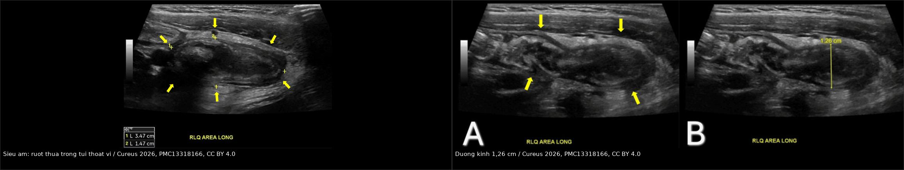
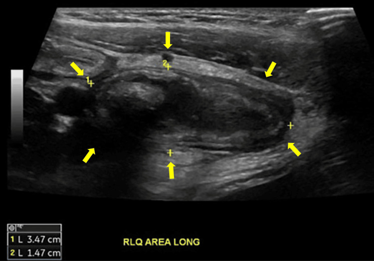
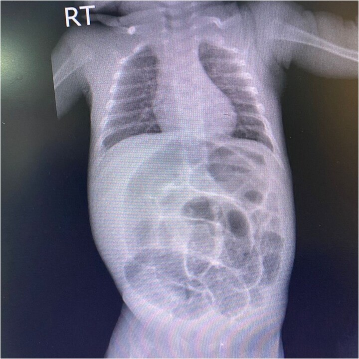
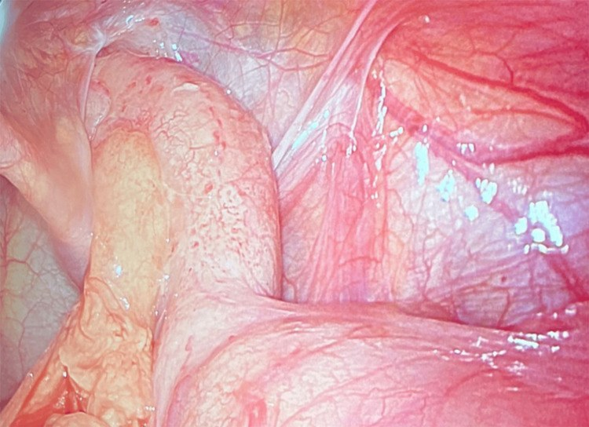

1740 — Thoát vị Amyand ở trẻ: ruột thừa nằm trong túi thoát vị bẹn — khi nào cắt ruột thừa, khi nào đặt lưới
Tags: pattern:khoi-ben-biu pattern:ruot-thua-trong-tui-thoat-vi pattern:khong-de-xep vung:bung vung:benh-biu score:Losanoff-Basson protocol:sieua-am-ben-biu protocol:CT-bung
Mức chắc chắn (certainty): tổng hợp y văn (literature synthesis) — ghép tổng quan hệ thống 2023 về đặt lưới và thái độ với ruột thừa (Diagnostics 2023, PMC10706417), ca nhi 8 tuổi có siêu âm trước mổ (Cureus 2026, PMC13318166), ca sơ sinh non tháng 33 tuần 6 ngày bị thoát vị nghẹt chứa manh tràng + ruột thừa hoại tử (J Surg Case Rep 2026, PMC13019284) và ca người lớn chẩn đoán trước mổ bằng POCUS (Clin Pract Cases Emerg Med 2026, PMC13135435).
Câu hỏi thực hành: bé trai 8 tuổi vào cấp cứu vì sưng–đau bẹn phải 2 ngày, nay không đẩy lên được, kèm nôn 2 lần, 38,2°C. Siêu âm tuyến đầu: một cấu trúc hình ống cụt, không đè xẹp, đường kính 12,6 mm, có sợi cản âm bên trong, nằm trong túi thoát vị bẹn. Bố hỏi: "Có phải thoát vị nghẹt không? Mổ thì có phải cắt ruột thừa không, và có đặt lưới được không?" Bài chốt sáu điểm: (1) tần suất có thật và đủ để nghĩ tới — ruột thừa trong túi thoát vị bẹn gặp ở 0,19–1,7% các ca thoát vị bẹn (trung bình < 1%**), viêm ruột thừa trong túi chỉ **0,07–0,13%**; **(2) trẻ gặp NHIỀU GẤP 3 LẦN người lớn** vì **ống phúc tinh mạc (processus vaginalis) chưa đóng** — cơ chế giải thích tại sao đây là bệnh cảnh nhi; **(3) chẩn đoán trước mổ được bằng siêu âm** — tiêu chí là **hình ống cụt, không đè xẹp, > 6 mm, có tăng sinh mạch trên Doppler, không phải "thấy được ruột thừa"; (4) phân loại Losanoff–Basson quyết định mổ gì — type 1 (ruột thừa lành) → cắt ruột thừa ở trẻ + vá không lưới; type 2 (viêm, không nhiễm khuẩn ổ bụng) → cắt ruột thừa + vá mô tự thân; type 3 (có nhiễm khuẩn ổ bụng/thành bụng) → mở bụng; type 4 (có bệnh lý ổ bụng kèm) → xử lý cả hai; (5) ở trẻ, lưới KHÔNG phải lựa chọn đầu tay — vì nguyên nhân thường là ống phúc tinh mạc tồn tại, vá mô tự thân giải quyết đúng cơ chế; (6) chẩn đoán muộn có tử vong 14–30% (giảm còn 5,5% nếu điều trị sớm), chủ yếu do nhiễm khuẩn huyết — nên không được xem là "chỉ là thoát vị nghẹt".

*Trái: cấu trúc hình ống cụt (ruột thừa) nằm trong túi thoát vị vùng bẹn phải, thành dày, không đè xẹp (mũi tên vàng). Phải: đo đường kính 1,26 cm (12,6 mm), lòng có sợi cản âm gợi ý appendicolith. Ảnh của bé trai 8 tuổi — siêu âm là phương tiện chẩn đoán trước mổ hợp lý nhất ở trẻ. Ảnh ghép letterbox giữ nguyên tỉ lệ (Cureus 2026, PMC13318166, CC BY 4.0).*1. Tổng quan bệnh học – cơ chế hình ảnh: vì sao ruột thừa chui được vào túi bẹn ở trẻ
- Định nghĩa: thoát vị Amyand là sự hiện diện của ruột thừa (vermis) trong túi thoát vị bẹn, có hoặc không có viêm (Diagnostics 2023, PMC10706417). Tên gọi từ ca mổ năm 1735 của Claudius Amyand trên một bệnh nhi 11 tuổi — vừa là ca thoát vị Amyand đầu tiên, vừa là ca cắt ruột thừa thành công đầu tiên trong lịch sử.
- Tần suất — bốn con số cần nhớ:
- Ruột thừa trong túi thoát vị bẹn: 0,19–1,7% các ca thoát vị bẹn, trung bình < 1% (Diagnostics 2023; Cureus 2026 ghi 0,2–1,7%).
- Viêm ruột thừa trong túi: 0,07–0,13% các ca thoát vị bẹn (Cureus 2026, PMC13318166; J Surg Case Rep 2026, PMC13019284).
- Viêm ruột thừa trong túi chiếm 0,1% tổng số ca viêm ruột thừa (Diagnostics 2023).
- Trẻ gặp gấp 3 lần người lớn (Cureus 2026) — vì lý do giải phẫu dưới đây.
- TẠI SAO trẻ gặp nhiều hơn — cơ chế giải phẫu: ở thai nhi, ống phúc tinh mạc (processus vaginalis) nối khoang phúc mạc với bìu và đóng lại quanh thời điểm sinh. Nếu ống tồn tại (patent processus vaginalis, PPV), ruột thừa có thể trượt theo ống xuống ống bẹn. Ở người lớn, ống đã đóng nên ruột thừa chỉ vào túi qua dây xơ nối túi với tinh hoàn — cơ chế hiếm và khác. Đây là lý do thoát vị Amyand là bệnh cảnh nhi, và cũng là lý do vá mô tự thân đóng ống phúc tinh mạc là cách xử lý đúng cơ chế ở trẻ (Diagnostics 2023).
- TẠI SAO ruột thừa bị viêm khi đã vào túi — vòng xoắn bệnh sinh: cổ túi thoát vị hẹp hơn lòng ruột thừa → ứ trệ tĩnh mạch và bạch mạch → phù thành → lòng bị tắc → vi khuẩn phát triển → viêm → dính vào túi → càng không đẩy lên được. Vòng xoắn này giải thích vì sao triệu chứng giống thoát vị nghẹt (đau, khối không đẩy lên, nôn) hơn là giống viêm ruột thừa điển hình (đau hố chậu phải, sốt, bạch cầu tăng).
- TẠI SAO bên TRÁI hiếm nhưng quan trọng: thoát vị Amyand trái chỉ xảy ra khi có bất thường vị trí: đảo tạng (situs inversus), manh tràng di động (floating cecum), ruột xoay bất toàn (malrotation) hoặc ruột thừa quá di động (Diagnostics 2023; ca bé trai 4 tháng thoát vị Amyand trái nghẹt, J Med Case Rep 2025, PMC12236001). Thấy ruột thừa bên trái → phải tìm bất thường vị trí, không chỉ mổ túi.
- TẠI SAO siêu âm là phương tiện đầu tay — vật lý đơn giản: ruột thừa trong túi bẹn nằm rất nông, chỉ dưới da và cân cơ, nên đầu dò linear tần số cao (7,5–12 MHz) cho hình ảnh tốt hơn nhiều so với ổ bụng sâu. Tiêu chí chẩn đoán là tổ hợp: hình ống cụt (blind-ended), không đè xẹp được (non-compressible) — đây là tiêu chí mạnh nhất vì ruột non bình thường đè xẹp được, đường kính > 6 mm, thành dày, tăng sinh mạch trên Doppler, appendicolith (sợi cản âm kèm bóng lưng). Ca nhi trong bài có 12,6 mm và appendicolith (Cureus 2026).
- TẠI SAO CT vẫn có chỗ: CT bụng–chậu có cản quang xác định vị trí, mức viêm, áp-xe, manh tràng hoại tử, dịch ổ bụng và loại trừ bệnh lý khác; nhưng ở trẻ, liều bức xạ và cần an thần khiến CT là bước sau siêu âm, không phải bước đầu. Trong ca sơ sinh non tháng, chẩn đoán thực tế vẫn thường đặt ra trong mổ (J Surg Case Rep 2026).
- TẠI SAO chẩn đoán muộn nguy hiểm: khi ruột thừa vỡ trong túi kín, nhiễm khuẩn lan vào mô dưới da bẹn–bìu và ổ bụng qua ống phúc tinh mạc. Tử vong do chẩn đoán muộn 14–30%, giảm còn 5,5% khi điều trị sớm (Diagnostics 2023, PMC10706417).
2. Mẫu hình + chẩn đoán phân biệt theo vị trí (Gamut)
- Bốn mẫu hình lâm sàng – hình ảnh ở trẻ:
- Tình cờ trong mổ thoát vị bẹn — ruột thừa lành (type A), không triệu chứng; phổ biến nhất trong các loạt người lớn, và vẫn là cách phát hiện chính ở trẻ.
- Khối bẹn–bìu không đẩy lên + dấu viêm tại chỗ — đỏ da bìu, ấn đau, có thể sốt; siêu âm thấy ống cụt không đè xẹp > 6 mm.
- Bệnh cảnh "thoát vị nghẹt" có nôn + bụng chướng — ruột thừa viêm/hoại tử đã gây tắc hoặc kéo manh tràng vào túi; đây là mẫu hình nặng nhất, đặc biệt ở sơ sinh non tháng.
- Khối bẹn–bìu kèm sốt, hồng ban lan rộng — nghi áp-xe/hoại tử hoặc viêm mô tế bào; cần mổ cấp cứu, không chờ hình ảnh.
- Gamut "khối bẹn–bìu cấp ở trẻ" — 8 nguyên nhân phải loại trừ: thoát vị bẹn nghẹt chứa ruột non → thoát vị Amyand → thoát vị Littre (túi chứa túi thừa Meckel) → tràn dịch màng tinh hoàn (hydrocele) → xoắn tinh hoàn → viêm mào tinh–tinh hoàn → hạch bẹn viêm → tinh hoàn ẩn/không xuống bìu.
- Gamut theo vị trí lỗ thoát vị: bẹn (inguinal) → Amyand, Littre, thoát vị nghẹt ruột non; đùi (femoral) → De Garengeot (ruột thừa trong thoát vị đùi — thường người lớn, nữ); rốn/bụng giữa → thoát vị rốn nghẹt; sau mổ (incisional) → thoát vị Amyand type 5 theo phân loại Rikki.
- Gamut "viêm ruột thừa ở trẻ < 3 tuổi": thoát vị Amyand → viêm ruột thừa thông thường (hiếm, chẩn đoán muộn) → viêm ruột thừa do dị vật → bệnh Hirschsprung biến chứng → lồng ruột–viêm ruột thừa.
- Cờ đỏ: khối bẹn không đẩy lên được + nôn + bụng chướng, da bìu đỏ tím, sốt > 38°C, bạch cầu tăng, trẻ sơ sinh chỉ quấy khóc và bỏ bú, không có phân/không trung tiện > 24 giờ. Ở sơ sinh non tháng, không nôn không loại trừ — ca trong bài chỉ có quấy khóc, đỏ bìu, bú kém, không đi phân 24 giờ (J Surg Case Rep 2026).
3. Bảng so sánh phân biệt (ma trận đối chiếu)
| Thực thể (entity) | Hình ảnh điển hình (US/CT) | Chốt vào (rule-in) | Chốt loại (rule-out) | Gợi ý xác nhận |
|---|---|---|---|---|
| Amyand — ruột thừa lành (type 1) | Ống cụt trong túi bẹn, không đè xẹp, ≤ 6 mm, không tăng sinh mạch, không dịch quanh | Hình ống cụt nằm trong túi thoát vị trên US/CT, không dấu viêm | Ruột non trong túi có nhu động, đè xẹp được → không phải ruột thừa | US linear; CT nếu không rõ |
| Amyand — viêm ruột thừa (type 2) | Ống cụt > 6 mm (ca trong bài 12,6 mm), thành dày, tăng sinh mạch, appendicolith, dịch quanh | Đường kính > 6 mm + không đè xẹp + appendicolith ± tăng sinh mạch | Chỉ thấy quai ruột giãn, không có cấu trúc ống cụt → nghĩ nghẹt ruột non | US Doppler; CT xác nhận mức viêm/áp-xe |
| Amyand type 3 (có nhiễm khuẩn ổ bụng) | Ruột thừa vỡ, dịch tự do, khí ngoài lòng ruột, dày phúc mạc | Dịch tự do + khí tự do + viêm phúc mạc trên CT | Không dịch tự do, chỉ viêm tại chỗ → type 2 | CT; mổ mở bụng |
| Thoát vị nghẹt ruột non | Nhiều quai ruột giãn, dấu hiệu tắc ruột, mất nhu động, thành ruột dày | Quai ruột giãn + mức nước–hơi + không nhu động trong túi | Có cấu trúc ống cụt riêng → nghĩ Amyand | US/CT; mổ cấp cứu |
| De Garengeot (thoát vị đùi) | Ruột thừa trong túi thoát vị đùi, dưới dây chằng bẹn | Vị trí dưới dây chằng bẹn + ống cụt | Vị trí trên dây chằng bẹn → Amyand | US/CT; đường mổ khác |
| Tràn dịch màng tinh hoàn | Dịch vô âm quanh tinh hoàn, đè xẹp, không có ống cụt | Dịch thuần nhất + tinh hoàn bình thường trong dịch | Thấy cấu trúc ống cụt → Amyand | US; đèn soi sáng |
| Xoắn tinh hoàn | Tinh hoàn giảm tưới máu/không tưới máu trên Doppler, dây tinh xoắn | Mất tín hiệu Doppler + đau dữ dội khởi phát đột ngột | Tưới máu bình thường, có ống cụt → Amyand | US Doppler cấp cứu; không chờ CT |
| Viêm mào tinh–tinh hoàn | Mào tinh to, tăng sinh mạch, tinh hoàn bình thường | Đau + tăng sinh mạch mào tinh + dấu Prehn | Không có ống cụt; khối riêng ở bẹn → nghĩ thoát vị | US Doppler; xét nghiệm nước tiểu |
- Ảnh ghép đối chiếu:
images/composite_sieu-am-amyand.jpg— cùng một bệnh nhi: cấu trúc ống cụt không đè xẹp và số đo 1,26 cm.
4. Protocol chụp + phân loại Losanoff–Basson
- Siêu âm bẹn–bìu (bước 1, bắt buộc):
- Đầu dò linear 7,5–12 MHz, khảo sát cả hai bên, cả tư thế nằm và đứng/Valsalva ở trẻ lớn.
- Ghi rõ: đường kính trước–sau (mm), có đè xẹp được không, thành (mm), Doppler, appendicolith, dịch quanh, tình trạng tinh hoàn (loại trừ xoắn).
- Không thấy ruột thừa không loại trừ Amyand — cổ túi hẹp, ruột thừa có thể nằm sau manh tràng/thoát vị vào sâu.
- CT bụng–chậu có cản quang (bước 2): khi siêu âm không kết luận, nghi áp-xe/vỡ, nghi bệnh lý ổ bụng kèm (type 4), hoặc cần đánh giá manh tràng. Ở trẻ, cân nhắc ALARA nhưng không trì hoãn khi có cờ đỏ.
- X-quang bụng: chỉ để tìm dấu hiệu tắc ruột/khí tự do; ca sơ sinh trong bài có giãn hơi lan tỏa nhiều quai, không có khí tự do — không đặc hiệu cho Amyand.
- Phân loại Losanoff–Basson (dùng để quyết định mổ):
| Type | Mô tả | Xử trí đề xuất |
|---|---|---|
| I | Ruột thừa lành trong thoát vị bẹn | Đưa ruột thừa về ổ bụng + vá lưới; cắt ruột thừa chỉ ở trẻ/người trẻ |
| II | Viêm ruột thừa cấp trong túi, không nhiễm khuẩn ổ bụng | Cắt ruột thừa + vá mô tự thân (không lưới) |
| III | Viêm ruột thừa có nhiễm khuẩn thành bụng/phúc mạc | Mở bụng + cắt ruột thừa + vá không lưới |
| IV | Viêm ruột thừa kèm bệnh lý ổ bụng khác | Cắt ruột thừa (qua túi hoặc mở bụng) + xử lý bệnh kèm |
- Điểm khác biệt ở TRẺ (quan trọng nhất): vì nguyên nhân là ống phúc tinh mạc tồn tại, lưới không phải lựa chọn đầu tay (Diagnostics 2023); vá mô tự thân giải quyết cả túi và cơ chế. Với ruột thừa lành, nhiều tác giả vẫn cắt ruột thừa ở trẻ vì nguy cơ viêm ruột thừa trong đời còn dài và để tránh chẩn đoán nhầm sau này — nhưng đây là tranh luận, không phải đồng thuận; phải giải thích cho gia đình.
- Không đặt lưới khi có nhiễm khuẩn tại chỗ: nguy cơ nhiễm lưới và rò. Khi buộc phải đặt trong trường nhiễm, có báo cáo dùng lưới sinh học/lưới lỗ lớn kèm kháng sinh, nhưng bằng chứng yếu ở trẻ (Diagnostics 2023).
- Kháng sinh: truyền trước mổ khi có dấu viêm/nghẹt; phổ bao phủ gram âm + kỵ khí; thời gian tùy mức nhiễm (type 2 thường 24 giờ, type 3 theo nhiễm ổ bụng).
flowchart TD
A[Khối bẹn-bìu cấp ở trẻ] --> B[Siêu âm linear: ống cụt, không đè xẹp, đo mm, Doppler, tinh hoàn]
B --> C{Có cấu trúc ống cụt trong túi?}
C -->|Có| D{Ruột thừa viêm? thành dày, dưới 6 mm?}
D -->|Không viêm| E[Losanoff-Basson type 1: đưa về ổ bụng + vá; cắt ruột thừa ở trẻ]
D -->|Viêm, không nhiễm ổ bụng| F[Type 2: cắt ruột thừa + vá mô tự thân, không lưới]
D -->|Viêm + nhiễm thành bụng/phúc mạc| G[Type 3: mở bụng + cắt ruột thừa + vá không lưới]
C -->|Không rõ| H[CT bụng-chậu cản quang + loại trừ xoắn tinh hoàn bằng Doppler]
H --> I{Có bệnh lý ổ bụng kèm?}
I -->|Có| J[Type 4: xử lý ruột thừa + bệnh kèm]
I -->|Không| K[Theo dõi/mổ theo lâm sàng; không bỏ sót thoát vị nghẹt]
5. Biến thể bình thường và cạm bẫy
- Cạm bẫy 1 — "chỉ là thoát vị nghẹt, mổ đơn giản". Nếu không nghĩ tới Amyand, phẫu thuật viên có thể đẩy ruột thừa viêm trở lại ổ bụng hoặc cắt nhầm quai ruột. Luôn mở túi và nhìn nội dung trước khi quyết định; chuẩn bị sẵn khả năng cắt ruột thừa và mở bụng.
- Cạm bẫy 2 — siêu âm âm tính. Cổ túi hẹp, ruột thừa sau manh tràng hoặc co nhỏ có thể không thấy. Ở trẻ có khối bẹn không đẩy lên + cờ đỏ, siêu âm âm tính không loại trừ.
- Cạm bẫy 3 — bên trái. Thoát vị Amyand trái gần như luôn kèm bất thường vị trí (đảo tạng, manh tràng di động, ruột xoay bất toàn). Phải khám/tìm trước khi mổ để không bỏ sót.
- Cạm bẫy 4 — trẻ sơ sinh không có triệu chứng kinh điển. Ca sơ sinh 33 tuần 6 ngày, 1460 g chỉ có quấy khóc, đỏ bìu, bú kém, không đi phân 24 giờ; trong mổ thấy manh tràng còn sống + ruột thừa hoại tử (J Surg Case Rep 2026). Không nôn không loại trừ tắc/hoại tử.
- Cạm bẫy 5 — đặt lưới trong trường nhiễm. Lưới trong mô đã nhiễm làm tăng nhiễm lưới, rò, mổ lại; ở trẻ còn làm mất cơ hội vá mô tự thân đúng cơ chế.
- Cạm bẫy 6 — bỏ sót xoắn tinh hoàn. Khối bìu đau cấp ở trẻ luôn phải khảo sát Doppler tinh hoàn trước khi kết luận "thoát vị nghẹt". Hai bệnh có thể cùng tồn tại.
- Cạm bẫy 7 — đọc "ruột thừa bình thường" là không cần cắt. Ở trẻ, ruột thừa lành trong túi vẫn là tranh luận; quyết định dựa trên tuổi, nguy cơ gây mê, khả năng theo dõi và giải thích gia đình, không có "đúng tuyệt đối".
- Biến thể bình thường dễ nhầm: tràn dịch màng tinh hoàn ở sơ sinh (hay gặp, tự tiêu), hạch bẹn nhỏ, tinh hoàn di động, mỡ trong ống bẹn — đều không phải ống cụt không đè xẹp.
6. Tự lượng giá — Blind Quiz
Ca 1 — Bé trai 8 tuổi, sưng–đau bẹn phải 2 ngày, không đẩy lên được, sốt 38,2°C. Nhìn siêu âm, mô tả trước khi mở đáp án.

- Gợi ý lâm sàng: nôn 2 lần, bụng mềm, tinh hoàn phải đau ít, Doppler tinh hoàn bình thường.
- Câu hỏi: Cấu trúc trong túi là gì? Dấu hiệu nào chốt? Đường kính bao nhiêu thì coi là viêm? Có cần CT không?
Bấm để hiện đáp án (findings + chẩn đoán)
- Dấu hiệu: cấu trúc hình ống cụt, không đè xẹp, thành dày, có sợi cản âm trong lòng (appendicolith); nằm trong túi thoát vị bẹn phải.
- Chẩn đoán: thoát vị Amyand có viêm ruột thừa (Losanoff–Basson type 2) — vì ống cụt > 6 mm + không đè xẹp + appendicolith trong túi bẹn.
- Số đo: 12,6 mm (1,26 cm) trên ảnh — vượt ngưỡng > 6 mm.
- Xử trí: cắt ruột thừa + vá mô tự thân, không lưới khi có viêm; kháng sinh gram âm/kỵ khí; không cần CT nếu siêu âm rõ và không nghi áp-xe.
- Nguồn ảnh: Cureus 2026, PMC13318166, CC BY 4.0.
Ca 2 — Bé trai sơ sinh non tháng 33 tuần 6 ngày, 1460 g, bìu phải đỏ–sưng 1 ngày, quấy khóc, bú kém. Nhìn X-quang bụng, mô tả trước khi mở đáp án.

- Gợi ý lâm sàng: không nôn, không đi phân 24 giờ, bụng chướng, da bìu đỏ tím.
- Câu hỏi: Dấu hiệu X-quang là gì? Có khí tự do không? Chẩn đoán nào phải nghĩ tới? Xử trí?
Bấm để hiện đáp án (findings + chẩn đoán)
- Dấu hiệu: giãn hơi lan tỏa nhiều quai ruột, không có khí tự do dưới cơ hoành; không có mức nước–hơi điển hình.
- Chẩn đoán: hình ảnh gợi ý tắc ruột/hoại tử, không đặc hiệu; trong mổ xác định thoát vị Amyand nghẹt chứa manh tràng còn sống + ruột thừa hoại tử (J Surg Case Rep 2026, PMC13019284).
- Vì sao dễ bỏ sót: sơ sinh không nôn, chỉ quấy khóc + đỏ bìu + bú kém; X-quang không phân biệt được nguyên nhân.
- Xử trí: mổ cấp cứu, cắt ruột thừa, đánh giá manh tràng, vá không lưới; kháng sinh.
- Nguồn ảnh: J Surg Case Rep 2026, PMC13019284, CC BY 4.0.
Ca 3 — Bé trai 5 tuổi, khối bẹn phải tái diễn nhiều tháng, hôm nay đau và không đẩy lên. Trong mổ thấy cấu trúc trong túi. Nhìn ảnh, mô tả trước khi mở đáp án.

- Gợi ý lâm sàng: không sốt, bạch cầu bình thường, siêu âm trước mổ không kết luận.
- Câu hỏi: Cấu trúc này là gì? Đây là type nào? Cắt hay giữ? Vá gì?
Bấm để hiện đáp án (findings + chẩn đoán)
- Dấu hiệu: ruột thừa nằm trong túi thoát vị bẹn, thành còn hồng, không hoại tử, không mủ.
- Chẩn đoán: thoát vị Amyand type 1 (ruột thừa lành) — bệnh cảnh phát hiện trong mổ.
- Xử trí: ở trẻ, cắt ruột thừa hợp lý (nguy cơ viêm về sau, tránh chẩn đoán nhầm) + vá mô tự thân đóng ống phúc tinh mạc; không lưới là lựa chọn đầu tay.
- Phản biện: với ruột thừa lành, cắt hay giữ vẫn tranh luận; ở người lớn nhiều tác giả chỉ đưa ruột thừa về ổ bụng; quyết định phải dựa trên tuổi và giải thích gia đình.
- Nguồn ảnh: Cureus 2026, PMC13318166, CC BY 4.0.
Bài liên quan chéo
- 1668 – Viêm ruột thừa ở trẻ dưới 3 tuổi (chẩn đoán muộn, biểu hiện không điển hình)
- 161 – Viêm ruột thừa cấp (tiêu chuẩn siêu âm ruột thừa: > 6 mm, không đè xẹp)
- 631 – Đau bìu cấp không do xoắn (phân biệt viêm mào tinh, tràn dịch, hạch)
- 636 – Cấp cứu niệu–sinh dục nhi (khối bìu cấp và xoắn tinh hoàn)
Ảnh
images/1740_amyand-hernia_US_Cureus-2026-Fig1.jpg,...-Fig2.jpg,...-Intraop_Cureus-2026-Fig3.jpg— Cureus 2026, PMC13318166, CC BY 4.0.images/1740_amyand-hernia_XR_JSCR-2026-Fig1.jpg— J Surg Case Rep 2026, PMC13019284, CC BY 4.0.images/composite_sieu-am-amyand.jpg— ảnh ghép letterbox từ 2 ảnh siêu âm PMC13318166 (giữ nguyên tỉ lệ, không crop), CC BY 4.0.- Chi tiết giấy phép từng ảnh:
images/CREDITS.md.
Không dùng để chẩn đoán độc lập khi chưa có người hướng dẫn.